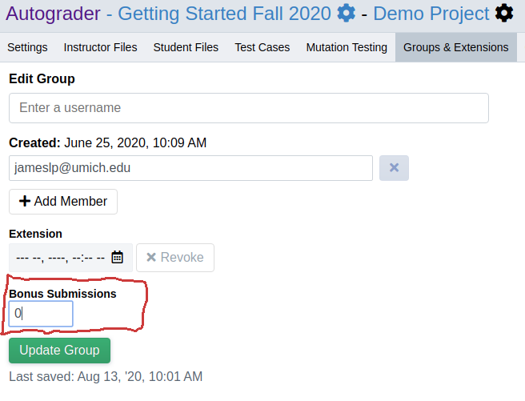
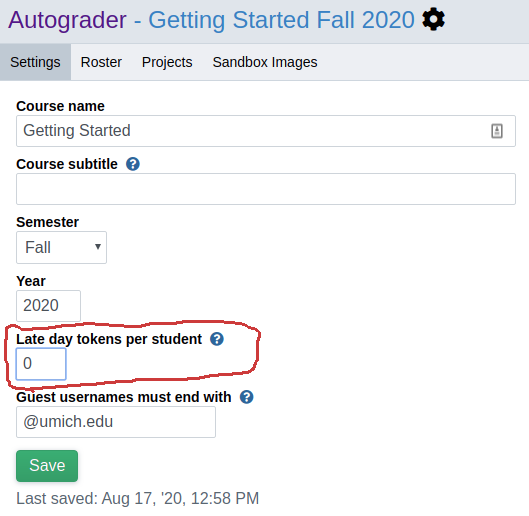

“Bonus Submission” and “Late Day” Tokens¶
Bonus Submission Tokens¶
A “bonus submission” token is a single-use token that lets a student or group submit beyond the project-configured daily submission limit. Using one token will allow one submission past the daily limit with normal feedback. If group work is enabled, tokens are allocated and used per group, NOT per student.
Bonus submission tokens are configured and allocated per project. To specify the number of tokens each group should receive, go to the “Settings” tab of the project admin page and set the value of the “Bonus submissions per group” field to the appropriate number of tokens.

Giving Extra Bonus Submission Tokens¶
To give all groups extra bonus submission tokens in the middle of a project cycle, simply increase the value of “Bonus submissions per group” in the project settings.
To give one group extra bonus submissions, go to the “Groups & Extensions” tab of the project admin page, select a group from the “Edit Group” dropdown, and increase the value of the “Bonus Submissions” field. Note that you can give a group extra bonus submissions even if the project-level “Bonus submissions per group” is zero.
Late Day Tokens¶
A “late day” token is a single-use token that lets a student or group effectively extend their project deadline by one day. Late day tokens are used automatically when a student attemps to submit after the hard deadline. Once a late day token is used, that student/group will be able to continue submitting for 24 hours after the project hard deadline.
Late day tokens are configured per course (NOT per project) and allocated per student. To specify the number of tokens each student should receive, go to the “Settings” tab of the course admin page and set the “Late day tokens per student” field to the appropriate value.
Giving Extra Late Day Tokens¶
To give all students extra late day tokens at any time, simply increase the value of the “Late day tokens per student” field to the appropriate value.
To give one student extra late day tokens, go to the “Late Day Tokens” tab of the course admin page. Select or search for a student in the dropbown menu, then edit the “Late Day Tokens Remaining” field that appears.

Edge Cases¶
Since late day tokens are allocated per student, their interaction with group work is complex. This section describes some of the edge cases that arise from this and how Autograder.io handles them.
If group work is enabled and a group member uses a late day token, then every member of that group automatically uses a late day token as well. If any member of the group does not have enough tokens left, then the submission will still be allowed but will not count for the student with insufficient tokens. In other words, that submission will be ignored when determining that student’s final graded submission.
If handgrading is enabled, this adds additional complexity to the above scenario where one group member has run out of tokens. If handgrading is enabled when this happens, we do not attempt to present multiple submissions from that group for handgrading. The submission that will be handgraded for that group will be the group’s final graded submission taking into account every submission from that group and ignoring late days.